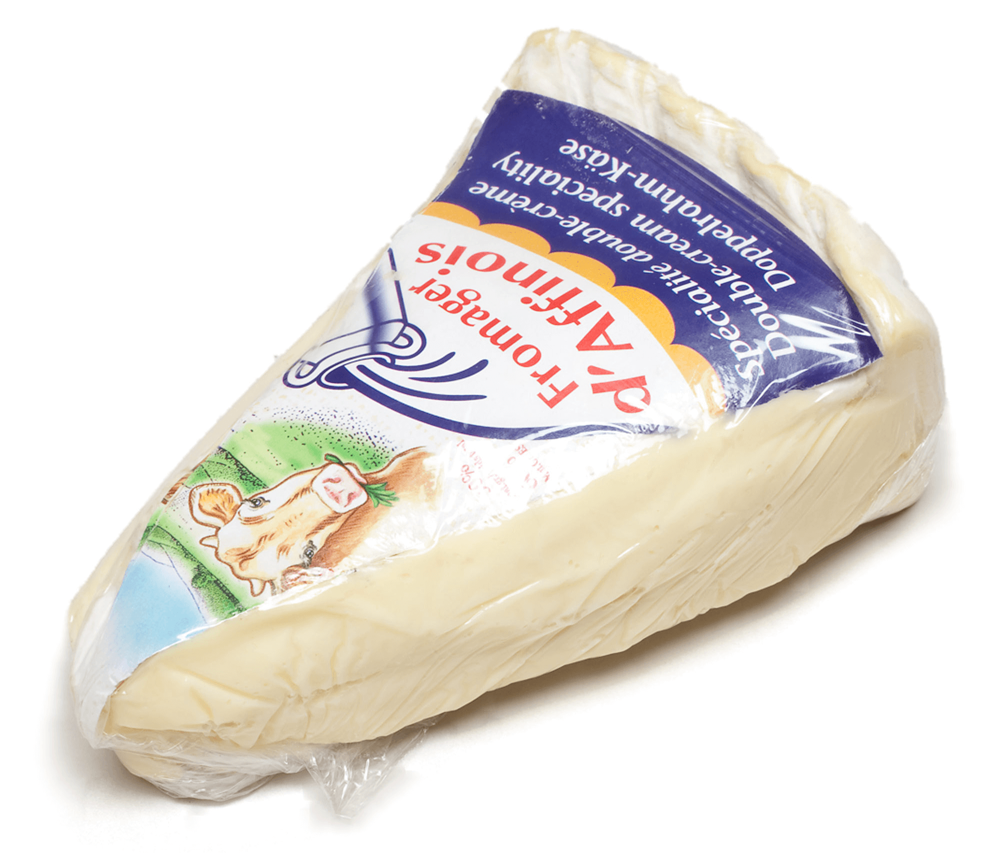
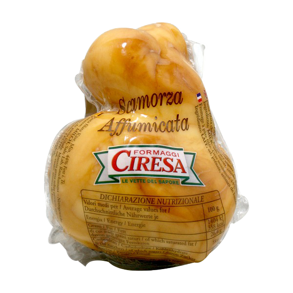
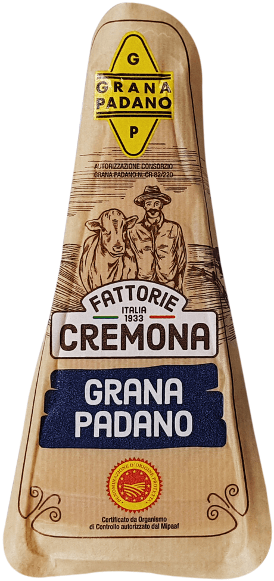
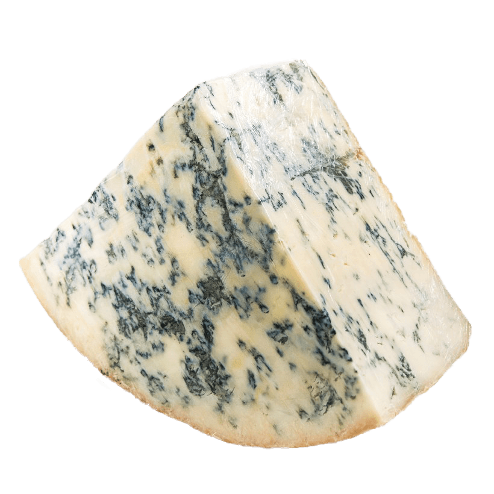

치즈 추천.
브리 치즈
Brie Cheese
껍질 부분에서 약간의 쓴맛이 느껴지는데 만약 싫다면
꿀을 뿌려먹자. 프라이팬에 구워서 꿀을 올리고 견과류나
과일을 얹어먹지만 자취집에 과일 있는 경우가 드물다는
걸 안다. 그대로 전자렌지에 돌리면 부드러워지고
생으로 먹으면 희미하게 쫄깃한 맛과 탄력이 있어서
개인적으로는 그냥 먹는 걸 좋아한다.
하얀 겉껍질로 둘러싸인 부드러운 연질치즈이다. 하얀 부분이 말하자면 곰팡이인데 곰팡이를 털어낸 상태이기 때문에 껍질과 같이 먹어도
무방하다. 다른 치즈에 비해 향이 강하지 않고 부드러워서 자연치즈에
입문할 때 많이 시도한다.

스모크 치즈, 스카모짜
Smoked Cheese
먹기 좋은 크기로 잘라서 생으로 먹는 것이 가장 맛있는데 여러명이 있을 때 껍질 부분만 골라먹는 걸 방지하기 위해서 껍질 부분과 안쪽 부분이 일정 비율로 함께 있는 조각으로 잘라야 한다. 와인과 잘 어울린다고 하지만 역시 맥주랑 먹는 것이 최고인 것 같다. 더 맛있게 먹는 나만의 방법이 있다면 후추를 뿌려먹자.
대부분 염분 함량이 높고 바깥 부분이 갈색으로 변색되는 것이
특징이다. 안쪽부분은 고소한 맛이 강하게 나고 훈연에 생긴 꼬독꼬독한 껍질 부분이 묘미다. 훈제 치즈라서 소세지와 비슷하다고 느낄 수 있다. 훈연 제품을 싫어하는 사람이라면 취향에 안 맞을 수 있지만 어딘가
익숙한 맛이면서 고소하고 짭짜름한게 소개 성공률이 높았다. 스카모짜는 모짜젤라를 훈연 처리한 것이다. 비싸지만 일반 스모크 치즈보다
쫄깃하고 크리미한 맛이 덜하다.

레드체다 치즈
RedCheddaer Cheese
큐브 모양으로 잘라 생으로 먹는다. 입 안 가득 한입에 먹기보다는 약간은 쪼잔하게 앞니로 야금야금 먹으면서 부슬부슬한 식감과 쿰쿰한 맛을 느끼는 것이 맛있다. 편의점에서 아무 와인이나 사서 먹어도 와인이 맛있어지는 맛이다. 체다 치즈를 먹으면서 드라이 와인의 텁텁함도 없어지는 경험을 했다.
우리에겐 체다 슬라이스 치즈가 가장 익숙해서 말랑말랑한 치즈라고
생각할 수 있다. 하지만 자연 체다 치즈는 반경성/경성 치즈다.
칼로 썰리는 수준의 단단함을 갖고 있다. 약간의 쓴맛과 짠맛이 있고
숙성이 오래 될수록 알갱이가 생기고 잘게 부서지는 식감을 갖는다.
레드체다는 체다에 색소가 들어간 것인데 맛 차이는 없다. 하지만 치즈
플래터를 만들 경우에 레드체다를 올려주면 색감이 확 산다.
역시 비주얼은 포기할 수 없다.
체더 치즈와 비슷하지만, 훨씬 부드럽고 촉촉한 콜비와 무난한 줄
알았더니 별안간 가볍게 톡 쏠 줄도 아는 몬테레이 잭이 주인공이다.
미국맛. 미국에 가본 적은 없다.신맛과 짠맛이 동시에 자기주장을
펼치는데, 이때 시원한 라거 한 잔 들이켜면 강렬함을 중화시켜준다.
부라타 치즈
Brata Cheese
손으로 결따라 반을 갈라주고 안쪽 크림과 함께 그냥 먹는다. 바싹 구운 토스트나 크래커같은 탄수화물과 정말 잘 어울린다. 올리브오일과 후추를 뿌리면 훨씬 맛있다. 방울토마토나 생채소와 잘 어울리는데 이처럼 냉장고에 오래가지 않는 재료는 그냥 생략한다.
우유를 농축해 놓은 듯 신선하고 풍부한 맛이 나는데 쫀득한 식감과
쫄깃한 외피를 자르면 속에 부드러운 크림이 들어 있다.
파르미지아노 레지아노,
그라나 파다노
Parmigiano-reggiano
불닭볶음면이나 크림이 잘 어울리는 음식에 갈아서 올려 먹으면 풍미가 훨씬 산다. 큐브처럼 잘라 먹어도 맛있다. 단독으로 먹으면 희미한 토맛이 떠올라서 술이나 음식에 곁들여 먹는 걸 추천한다.
소개한 치즈 중에서 가장 단단한 경성치즈다. 파르미지아노는
소의 먹이가 목초지에서 나는 신선한 풀이나 마른 건초로 제한되어있다. 반면 그라나는 일정된 식단을 가지고 있지 않고 주로 마르지 않은
저장된 풀을 먹기 때문에 품질 차이가 있고 그라나가 더 저렴하다. 나는 둘의 차이를 알 정도로 예미한 미각은 없나보다. 파마산 치즈와
비슷한 콤콤함을 갖고 있다.

고르곤졸라
피칸테
Gorgonzola Piccante
많이들 아는 고르곤졸라 피자에 들어가는 그 치즈가 맞다.
고르곤졸라에는 단계가 있는데 이름 뒤에 붙은 피칸테가 향이 가장
강한 단계를 의미한다. 푸른 곰팡이가 있는 치즈이고 당연하게도
곰팡이 냄새가 강하게 난다. 곰팡이 자체를 먹는 화-한 맛,
코 뚫리는 맛이 난다.

숌므 치즈
Chaumes Cheese
전자렌지에 돌린 후 약간 흘러나온 속을 바싹 구운 토스트나 크래커같은 탄수화물에 찍어먹는다.
전자렌지에 돌린 후 약간 흘러나온 속을 바싹 구운 토스트나 크래커같은 탄수화물에 찍어먹는다.
치즈 비교.